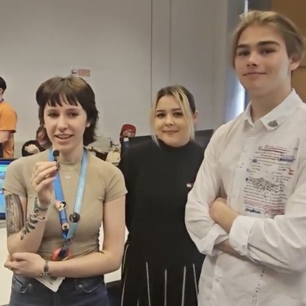

Coco's Treat Dash
Feedback at the Greenwich University Digital Shark Expo
"The end game was good quality and displayed a good range of technical competence with a lot of nice details which made it feel polished."
"Overall this was an excellent first year project."
About
Coco’s Treat Dash began as a first‐year group project, inspired by classic arcade titles. In this 3D action/simulation game (reminiscent of Pac‑Man), you play as Coco – a cute dog navigating a park, collecting treats and avoiding obstacles, including curious humans. I handled game mechanics such as the bark ability, enemy behavior, and dynamic power‑ups, while also contributing to animations, terrain design, and UI icon development.
Project Info
- Role: Gameplay Programmer
- Team Size: 3
- 6 Weeks
- Engine: Unity (C#)
Team Photo

Introduction
The game challenges you to use speed, strategy, and power-ups as you guide Coco through a busy park. From implementing responsive enemy AI to fine-tuning the bark mechanic, every element was refined through extensive playtesting.
What I Learned
Working on Coco’s Treat Dash sharpened my skills in real-time game mechanics, animation integration, and user interface design. I learned valuable lessons in team collaboration, asset management, and troubleshooting performance issues in Unity. For more details, please refer to my GitHub and itch.io pages.